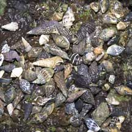
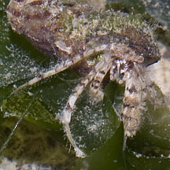
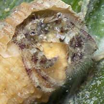
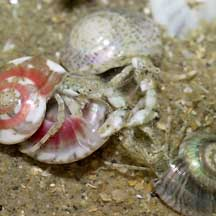
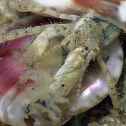
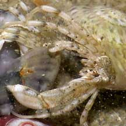

|
|
| hermit crabs text index | photo index |
| Phylum Arthropoda > Subphylum Crustacea > Class Malacostraca > Order Decapoda > Anomurans > hermit crabs |
| Huddling
hermit crab awaiting identification* updated Dec 2019 Where seen? Displayed on this page are tiny crabs commonly seen at low tide, huddling together on rocks or among seagrasses and on sand. Often, in a heap of tiny but different kinds of shells. Many but not all of these hermit crabs may be Diogenes sp. Features: Body about 1cm long or smaller. The left pincer is usually much larger than the right. Body and limbs hairy to slightly hairy. Colour grey, brown or white. Legs with bands. |
|
 A heap of tiny but different kinds of shells. St John's Island, Jan 06 |
 Pasir Ris, Dec 08 |
 Pulau Semakau, Sep 09 |
|
 Changi, Apr 05 |
 Changi, Apr 05 |
 Changi, Apr 05 |
*Species are difficult to positively identify without close examination.
On this website, they are grouped by external features for convenience of display.
| Huddling hermit crabs on Singapore shores |
On wildsingapore
flickr
|
| Other sightings on Singapore shores |